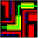
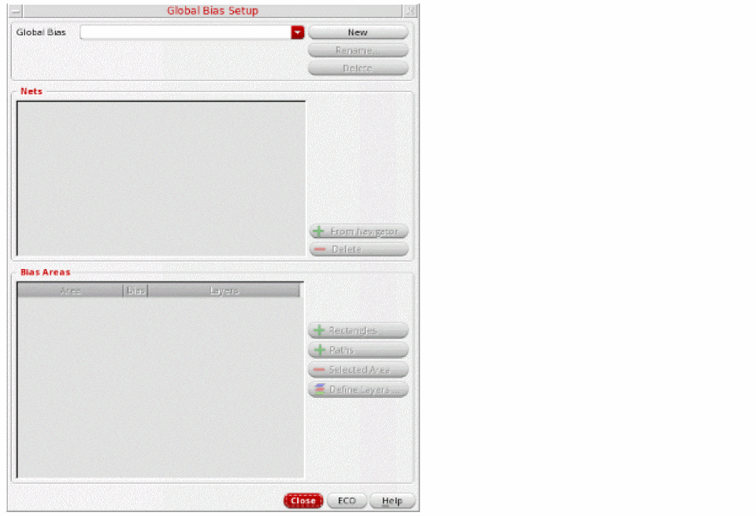
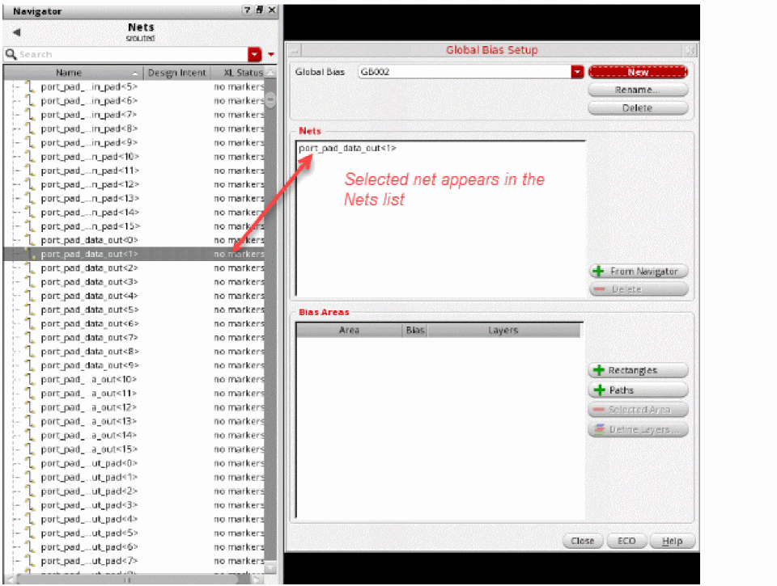
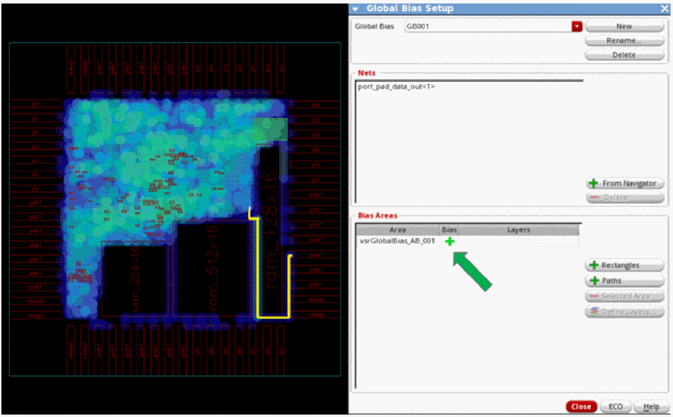
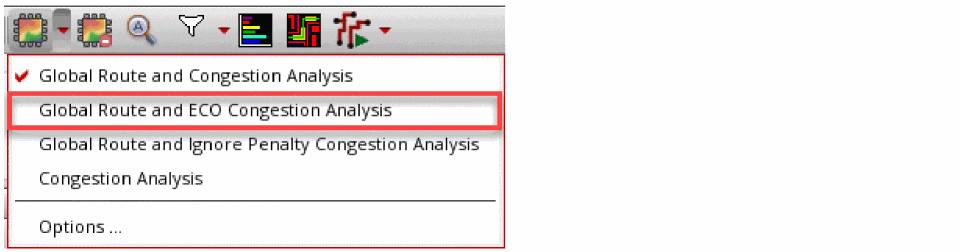
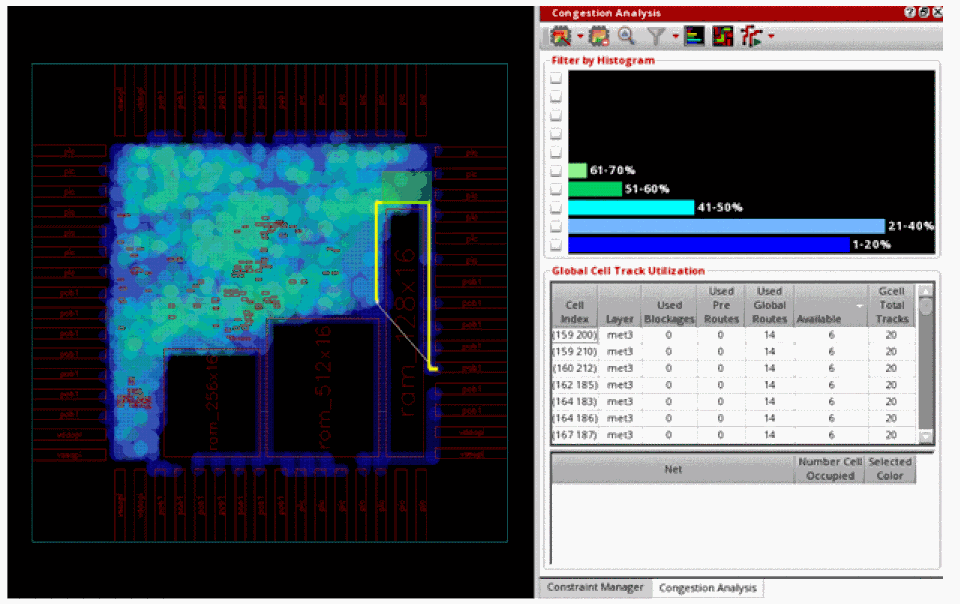

Creating a Global Bias Positive Region Constraint
You can consider the global bias positive region constraint as a magnet that can attract a group of nets and buses into a region during global routing. These biased nets take priority over the other nets that also pass through the same region. This means that the global router may push aside the other nets to ensure that the biased nets pass through the region successfully.
To create a global bias positive region:
- Select a net, group of nets, or a bus from the Navigator assistant. For example, select the net port_pad_data_out<1> from the Navigator assistant.
-
Click the Global Bias Setup icon 
on the Congestion Analysis assistant toolbar.
The Global Bias Setup form displays.
 -
Click the New button to create a new global bias constraint group.
The form is updated to create a default group named as GB002. This is an auto-generated global bias name. Also, the net selected in the Navigator assistant appears in the Nets list.
You can add and remove the nets to the Global Bias Setup form.
To add nets:- Select a net or a group of nets from the Navigator assistant.
- Click the + From Navigator button in the Global Bias Setup form.
The nets selected in the Navigator assistant get displayed in the Nets list box.
To remove nets:
The selected net is removed from the Nets list box. -
Rename the default global bias constraint name to a user-defined name. To edit the name, click in the Global Bias text field and specify another name.
You can add a net or group of nets selected in the Navigator Assistant to the renamed global bias constraint. This is done using the + From Navigator button in the Global Bias Setup form. - To add the positive bias region, click the + Rectangles button.
-
Click and drag to draw a region in the heat map.
The region created on the heat map is used as the coordinates for the bias area. The bias area is automatically assigned a name called vsrGlobalBias_AB_001 and is displayed in the Bias Areas list box. The Green ± symbol in the Bias column next to the bias area indicates that it is a positive bias.
 -
If you have created an incorrect region, you can delete it. To do so:
The selected bias area is removed. -
To see how the new constraint alters routing and congestion, click the ECO button in the Global Bias Setup form. Alternatively, click Global Route and ECO Congestion Analysis option from the Congestion Analysis drop-down list.
The ECO button in the Global Bias Setup form is enabled only when there is a valid global bias constraint.
The following figure shows that the net is now attracted through the bias region and no longer takes the circuitous path.

Related Topics
Creating a Global Bias Negative Region Constraint
Creating a Global Bias Path Constraint
Creating Multiple Global Bias Constraints for Specific Layers
Return to top